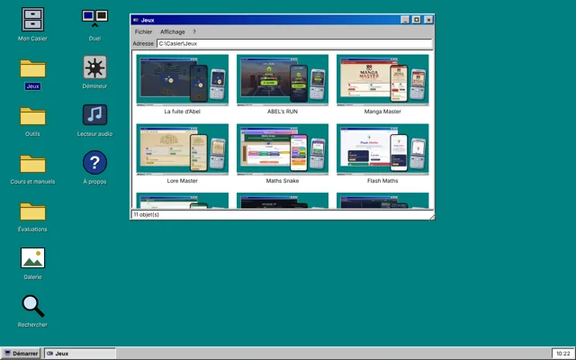
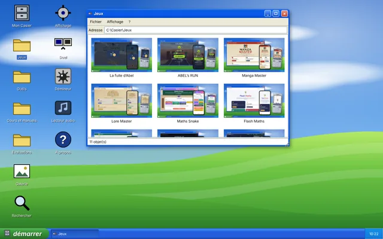
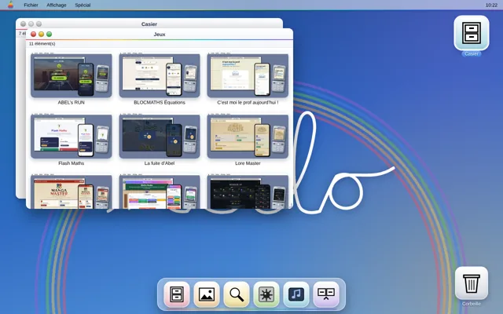
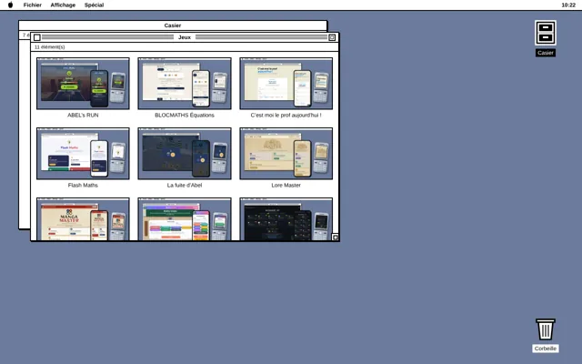

Windows 98
Bureau turquoise, fenêtres grises en relief, menu Démarrer, Démineur et Lecteur audio.
OuvrirLe même casier, habillé comme des ordinateurs d’autrefois. Les ressources sont les mêmes : seul l’affichage change.

Bureau turquoise, fenêtres grises en relief, menu Démarrer, Démineur et Lecteur audio.
Ouvrir
Colline verte et ciel bleu, fenêtres bleues arrondies, bouton « démarrer » vert, fond d’écran personnalisable.
Ouvrir
Fenêtres arrondies, dock, poire multicolore et grand « hello » cursif. Le Duel est gagné d’avance.
Ouvrir
Noir et blanc, fenêtres rayées, barre de menus blanche : l’esprit des premiers Macintosh.
OuvrirCes versions lisent une photo des fiches du casier : elle est mise à jour à la demande. Aucune donnée n’est collectée.